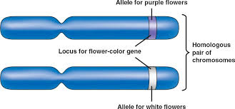
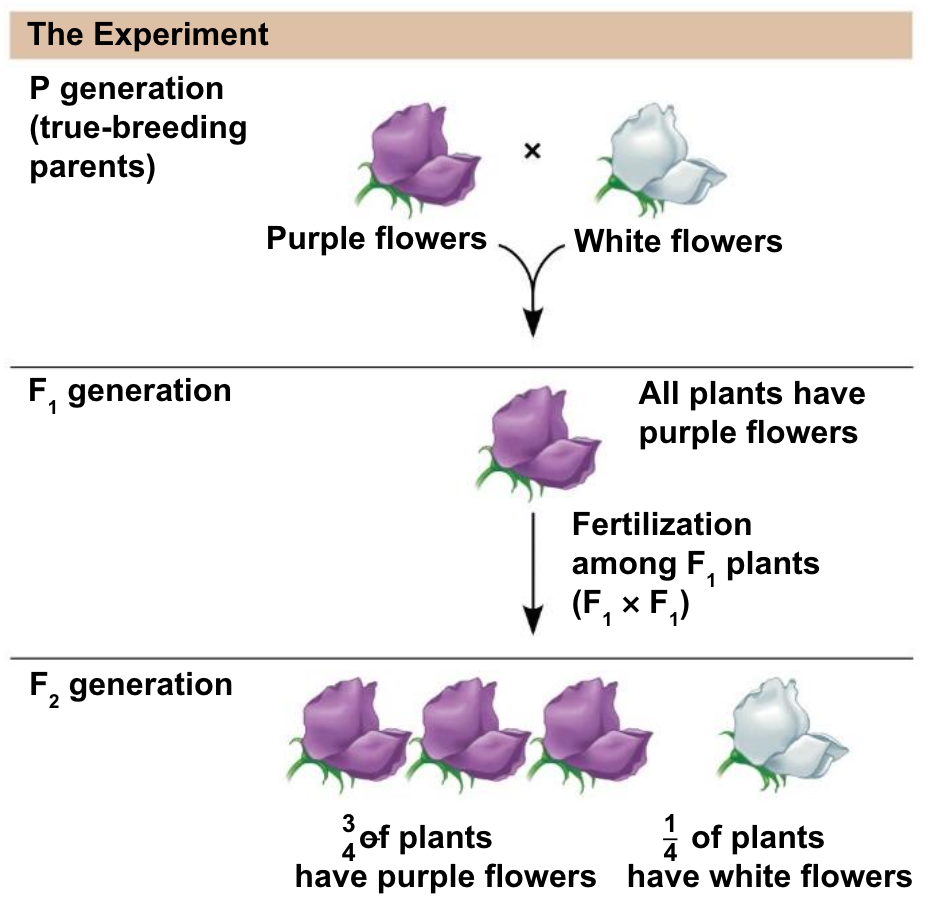

5.4 Mendelian Inheritance
Everything so far has happened inside one cell. Now the unit crosses over: from how a gene works to how a gene travels — from parent to child, and from one generation to the next. The surprising thing is that this was worked out a century before anyone knew DNA existed.
The words you cannot do without
Genetics has a small vocabulary that has to be exact. Most confusion in this chapter comes from blurring two of these together, so it is worth being slow here.
| Term | Meaning | Example |
|---|---|---|
| trait | A characteristic you can observe | Flower colour |
| gene | The stretch of DNA that controls that trait | The flower-colour gene |
| allele | One version of a gene | P (purple) or p (white) |
| dominant | An allele expressed whenever it is present | P — one copy is enough |
| recessive | An allele expressed only when there is no dominant one | p — needs two copies |
| homozygous | Two identical alleles | PP or pp |
| heterozygous | Two different alleles | Pp |
| genotype | Which alleles an organism has | Pp |
| phenotype | What you can actually see | Purple flowers |
Genotype and phenotype are the pair worth fixing hardest. PP and Pp are different genotypes but the same phenotype — both plants look purple. You cannot tell them apart by looking, which is a problem Mendel had to solve experimentally and which comes back in the pedigrees of 5.6.

"Dominant" does not mean common, strong, or better. It is a statement about expression only. Polydactyly — having extra fingers — is caused by a dominant allele and is rare. Having five fingers is recessive and nearly universal. Frequency in a population and dominance are unrelated ideas.
Mendel, and why peas
Gregor Mendel was a monk working in what is now the Czech Republic in the 1860s. He chose garden peas because they have traits that come in two clean versions — round or wrinkled, tall or short, purple or white — and because he could control which plants bred with which.
He started with true-breeding parents: purple-flowered plants whose offspring were always purple, and white-flowered plants whose offspring were always white. Then he crossed them.

That reappearance is the whole discovery. If inheritance worked by blending — the idea most people held at the time — a purple and a white parent would give pale purple offspring, and white could never come back. Mendel's numbers said something else: inheritance works in discrete units that stay intact even when they are not showing.
Those units are what we now call alleles. Mendel never saw one, never used the word gene, and had no idea about DNA. He inferred all of it from counting thousands of plants.
Three laws, and where they come from
- The law of dominance. When two different alleles are present, only the dominant one is expressed in the phenotype.
- The law of segregation. The two alleles for a gene separate during gamete formation, so each gamete carries only one.
- The law of independent assortment. Alleles for different genes separate independently of one another — how you inherit flower colour tells you nothing about how you inherit height.
All three are consequences of meiosis, which you met in 4.5. Segregation happens because homologous chromosomes are pulled apart into different cells, so a gamete gets one of each pair rather than both. Independent assortment happens because each pair lines up and separates without regard to the others — that is worked through properly in 4.6, and it is worth going back to if the next section feels like it is asserting something.
Mendel deduced the rules from counting peas. Meiosis is the mechanism that makes them true — and the fit between the two is one of the neatest confirmations in biology.
This is also why a Punnett square works at all. Its rows and columns are the possible gametes, and the reason each parent contributes exactly one allele per box is the law of segregation.
Why no two siblings are the same
Meiosis does not only obey Mendel's laws — it is busy creating variation while it does so. This is the third source of inheritable variation your standard asks about, alongside copying errors and environmental damage, and it is by far the biggest one within a family.
You met both mechanisms in 4.6. What follows is the short version, aimed at why it matters for inheritance rather than at the mechanics — if either half feels thin, that chapter is where the full account lives.
Two things happen, and they multiply together.
1. Independent assortment
You have 23 pairs of chromosomes. When they line up in meiosis, each pair separates without regard to any other pair — whether a gamete gets your mother's chromosome 1 has no bearing on whether it gets your mother's chromosome 2.
Each pair is an independent coin toss, and there are 23 of them. So the number of possible chromosome combinations in one gamete is 223 — more than 8 million, before anything else has happened.
2. Crossing over
Before the pairs separate, something else takes place. Homologous chromosomes line up alongside one another and physically swap matching segments.
Think about what that means. The chromosome 7 you pass to your child is not the chromosome 7 you got from your mother, and it is not the one you got from your father either. It is a patchwork of both — and where the swaps fall is different every time. Crossing over builds combinations of alleles that have never sat on the same chromosome before.
Put the two together and the arithmetic stops being meaningful: essentially every gamete you produce is genetically unique, and always has been. Two parents cannot run out of genetically different children.
This is the answer to something you have probably wondered about. Siblings share the same two parents and draw from the same pool of alleles — which is why they resemble each other. But each of them got a different deal from that pool, which is why they are not identical.
Here is the distinction that is worth getting exactly right, because the two get muddled constantly.
Meiosis makes no new alleles. It shuffles the ones that are already there and deals them into new hands. Shuffling a deck of cards thoroughly gives you an order nobody has ever seen — but it does not print a single new card.
Only mutation makes a genuinely new allele. Every allele being shuffled in meiosis today started as a mutation in somebody's ancestor. Mutation writes the cards; meiosis deals them.
Predicting a cross
A Punnett square is a bookkeeping device. Along the top go the gametes one parent can make; down the side, the gametes the other can make. Each box is one possible combination, and all four boxes are equally likely.
Set up the crosses from your anchor guide below. Predict first, then prove it.
Punnett square workbench
Interactive- Cross a heterozygous round pea plant with a homozygous wrinkled one. What genotype and phenotype ratios do you get? (This is question 1 on page 3 of anchor guide 5.2.)
- Now cross two heterozygous plants. Why does the phenotype ratio change to 3 : 1 when the genotype ratio is 1 : 2 : 1?
- Set both parents to homozygous recessive. Explain why the result is certain rather than probable.
- A breeder has a black horse and needs to know whether it is BB or Bb. Which cross would tell them, and what result would prove it? (This is called a test cross.)
What the square is really telling you
A Punnett square gives a probability for each offspring, independently. This is the single most misread idea in the unit, so it is worth stating three ways:
- A 3 : 1 ratio does not mean that in any four offspring, exactly three will be dominant.
- It means each offspring has a 3-in-4 chance, in the same way each coin toss has a 1-in-2 chance.
- Previous offspring change nothing. Two carrier parents who already have a child with cystic fibrosis still face a 1-in-4 chance next time.
Where the numbers do become reliable is in large samples. Mendel counted 929 F2 plants and got 705 purple to 224 white — a ratio of 3.15 : 1. Four plants would have told him nothing; a thousand told him the rule.
Two probabilities multiply when you want both to happen. The chance of a Pp × Pp cross giving a white plant is ¼. The chance of the first two offspring both being white is ¼ × ¼ = 1/16. You will use this again for dihybrid crosses in 5.6.
What dominance means underneath
Mendel's view is called classical genetics: alleles as abstract units that behave in ratios. You now know enough to add the molecular view underneath it, and the two together are much more satisfying than either alone.
Why is one allele dominant? Usually because the recessive allele is a version of the gene that produces no working protein — and one working copy makes enough.
- PP — two working copies of the pigment enzyme. Purple.
- Pp — one working copy. Still enough enzyme. Purple.
- pp — no working copies. No pigment. White.
Now read cystic fibrosis the same way, because it is the identical logic: carriers (one working CFTR allele) make enough chloride channel to be perfectly healthy; only cc individuals, with no working copy, are affected. "Recessive" and "one working copy is enough" are two names for the same fact.
This also explains the CFTR chart in Figure 5.14. Every combination containing a healthy allele sat in the high-activity band — not because the healthy allele overpowered anything, but because it was quietly making protein the whole time.
Where this goes next
Everything in this chapter has assumed a trait with two clean versions and one allele fully masking the other. Mendel chose peas precisely because they behave that way.
Now look at yourself. Your height is not tall-or-short. Your skin colour is not one of two options. Blood group comes in four types, not two. And red-green colour blindness turns up far more often in boys than in girls, which no square you have drawn so far can explain. Chapter 5.5 takes each of those cases in turn — and the encouraging part is that the Punnett square never stops working. Only the way you read it changes.
Check your understanding
- Explain the difference between a gene and an allele to someone who has mixed them up. Use flower colour.
- Two purple-flowered plants produce a white-flowered offspring. What must the genotypes of both parents be? Explain how you know.
- Why can two organisms with the same phenotype have different genotypes, but never the reverse?
- Mendel's F1 plants were all purple. If inheritance worked by blending, what would he have seen instead — and what would have happened in the F2?
- Connect the law of segregation to meiosis in one sentence, naming what physically separates.
- A student says "Bb means the horse is half black and half chestnut." Correct them at both the phenotype and the protein level.
Quick check
This part marks itself, and points you back to the right section if something is shaky.
Polydactyly — having extra fingers — is caused by a dominant allele, and it is rare. Why is that not a contradiction?
Dominant does not mean common, strong or better. Having five fingers is the recessive phenotype and is nearly universal. If you catch yourself reasoning “it must be dominant because most people have it,” that is the error to stop.
Having five fingers is the recessive phenotype, and almost every person on earth has it. Does that undermine the idea of dominance?
Dominance answers a question about one organism: does this allele show when it is there. Frequency answers a question about a population: how many individuals carry it. Nothing ties the two answers together, which is why the near-universal phenotype here is the recessive one.
White flowers vanished completely in Mendel's F1 generation and reappeared in a quarter of the F2. Why did that rule out blending inheritance?
That reappearance is the whole discovery. Inheritance works in discrete units that stay intact even while they are not showing — which is why a trait can skip a generation and come back exactly as it was. Mendel inferred all of this without ever seeing an allele or hearing the word gene.
Mendel crossed true-breeding round-seeded peas with true-breeding wrinkled ones. Every F1 seed was round, and wrinkled seeds returned in about a quarter of the F2. What would blending inheritance have predicted instead?
Blending was the reasonable theory of its day, and one observation sinks it: a form that disappears completely and then comes back unchanged. Whatever carries wrinkled had to survive a generation of not being visible, which means inheritance deals in units that stay intact rather than in mixtures.
Which event in meiosis is the law of segregation describing?
Mendel deduced the rule from counting peas; meiosis is the mechanism that makes it true. This is also why a Punnett square works at all — the reason each parent contributes exactly one allele per box is that the pair was physically pulled apart in meiosis.
Which event in meiosis is the law of independent assortment describing?
This is the mechanism behind a claim that otherwise sounds like an assertion: that inheriting flower colour tells you nothing about inheriting height. Twenty-three pairs each separating on their own terms is twenty-three independent coin tosses, which is where the eight million combinations per gamete come from — before crossing over has added anything.
A student says meiosis creates new alleles, and that this is why siblings differ. What is wrong with that?
Shuffling a deck thoroughly gives an order nobody has ever seen, but it does not print a single new card. Every allele being dealt in meiosis today started as a mutation in somebody's ancestor. Mutation writes the cards; meiosis deals them.
A gene turns up in a child in a version that neither parent carries and that has never appeared in either family. Which process must have produced it?
Meiosis is thorough enough to make essentially every gamete unique, which makes it tempting to credit with more than it does. It rearranges; it never writes. Every allele being dealt today entered the family at some point as a mutation in an ancestor.
A breeder has a black horse and needs to know whether it is BB or Bb. Which cross settles it?
This is a test cross, and it works because the bb parent can only contribute b. Every foal therefore shows whatever the unknown parent gave it: a chestnut foal means a b came from the black horse, so it must be Bb. It is the standard way of getting at a genotype you cannot see.
A purple-flowered pea plant is either PP or Pp, and you need to know which. Which cross, and which outcome, would settle it?
The whole trick of a test cross is choosing a partner that can only contribute a recessive allele. That turns every offspring into a direct read-out of what the unknown parent gave it, so a phenotype you can see reports a genotype you cannot.
Two heterozygous pea plants produce four seeds, and all four grow into purple plants. Does that contradict the 3 : 1 ratio?
The ratio becomes reliable in large samples, not small ones. Mendel counted 929 F2 plants and got 705 purple to 224 white — 3.15 : 1. Four plants would have told him nothing; a thousand told him the rule.
Two carrier parents have had three children, none of them affected by cystic fibrosis. They are expecting a fourth. What is the chance that this child is affected?
Probability has no memory. Each conception deals the same two parents' alleles again from the start, so the odds reset every time and previous children change nothing. What a ratio describes is what emerges across hundreds of offspring, not what is owed to one family.
At the molecular level, why is the purple allele dominant over the white one?
“Recessive” and “one working copy is enough” are two names for the same fact. Read cystic fibrosis the same way and carriers stop being mysterious: one working CFTR allele makes enough chloride channel, so only someone with no working copy is affected.
A cystic fibrosis carrier has one CFTR allele that makes a working chloride channel and one that makes none, and is perfectly healthy. What does that tell you about the faulty allele?
This is also why every CFTR combination containing a healthy allele sat in the high-activity band in Figure 5.14. The healthy allele was not overpowering anything — it was quietly making protein the whole time, and enough of it.